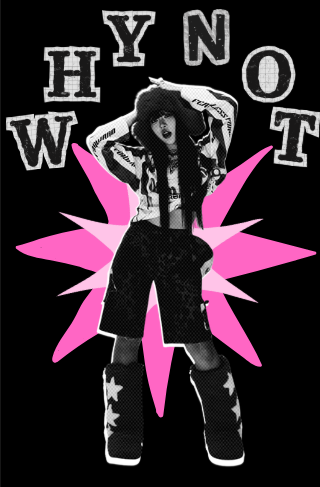

¿Y porqué no? Es un blog para todas aquellas mentes que no pueden quedarse en silencio por mucho timempo, aquí podras ver distintos enfoques a preguntas que seguramente tienes con respecto a la moda. Why not busca que dejes de tener miedo a mostrar tu verdadero color y te preguntes ¿Qué es lo peor que puede pasar?
Anna Sui: Una diseñadora de modas estadounidense con ascendencia china, nos adentra en su mundo de fantasía y para esto hace uso de diferentes formas y colores. Si quieres adentrarte en un mundo lleno de color y de mundos fantásticos, Anna Sui es la ideal.
Hoy la canción del día es "Daylight" de Taylor Swift, me parece interesante la parte final, ya que habla de de ser definida por las cosas que amas y no por los cosas que te dan miedo, siento que es igual en la moda, vestirte con y por las cosas que ames y no vestirte con miedo.
"I wanna be defined by the things that I love Not the things I hate Not the things I'm afraid of, I'm afraid of The things that haunt me in the middle of the night, I I just think that you are what you love"